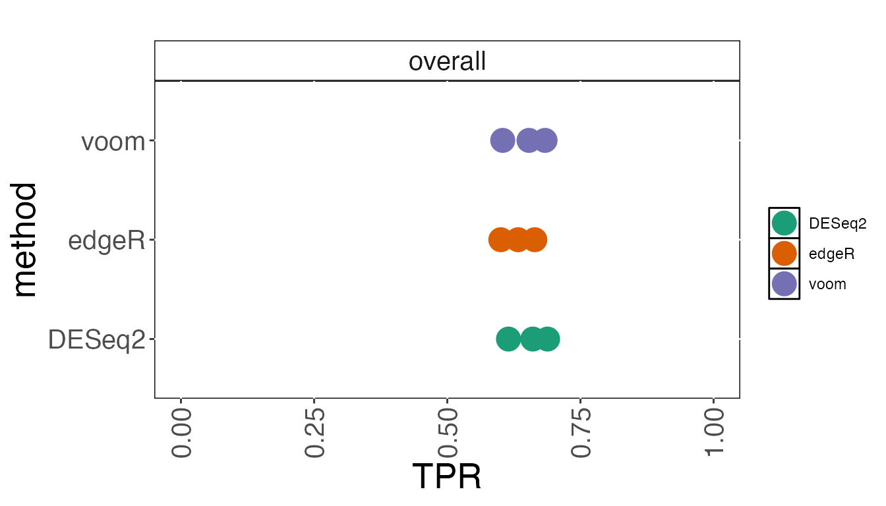
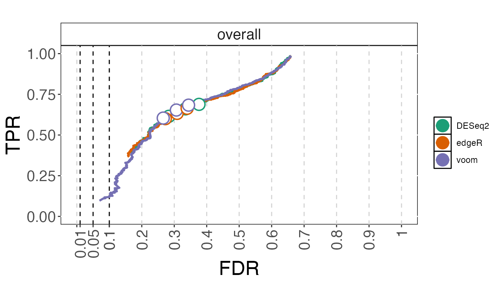
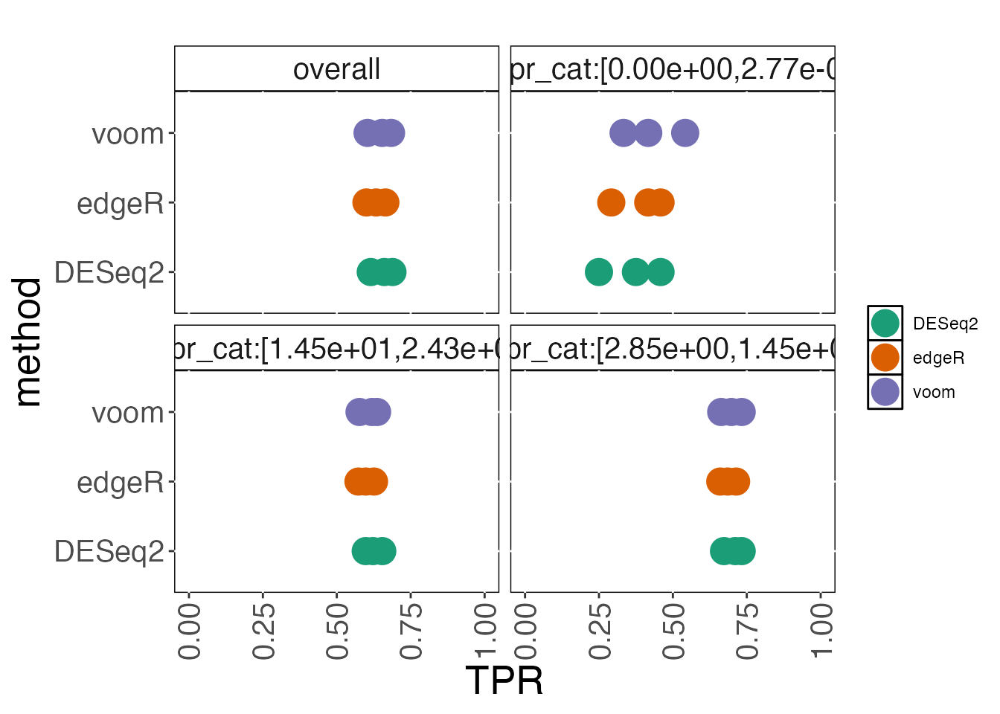
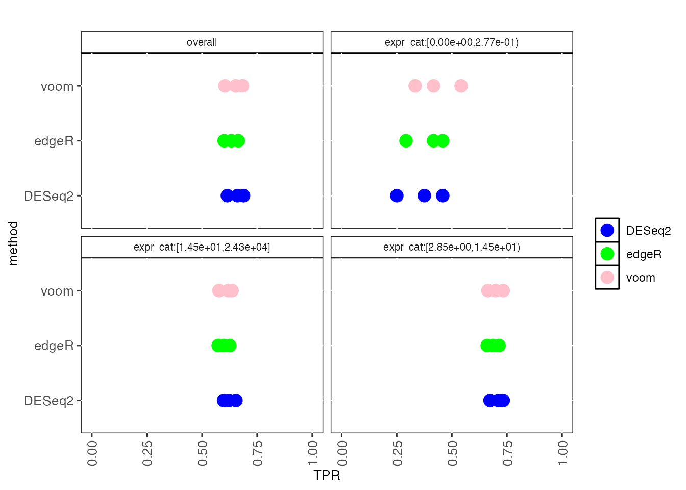

iCOBRA is a package to calculate and visualize performance metrics for ranking and binary assignment methods. A typical use case could be, for example, comparing methods calling differential expression in gene expression experiments, which could be seen as either a ranking problem (estimating the correct effect size and ordering the genes by significance) or a binary assignment problem (classifying the genes into differentially expressed and non-differentially expressed).
For more detailed information regarding the calculations, handling of
missing values etc, please consult the “Instructions” tab of the shiny
application, available via the function COBRAapp().
Basic workflow
Creating a data set
The starting point for an evaluation is typically a collection of
feature ‘scores’ (p-values, adjusted p-values or any other ranking
score) and the truth (information about the true status, or the true
scores for the features). These values are stored in an
COBRAData object. Here, we will start from an example
COBRAData object provided with the package. Each slot in
the COBRAData object should be a data.frame,
with row names representing feature IDs. The row names will be used to
match features across slots.
## [1] "COBRAData"
## attr(,"package")
## [1] "iCOBRA"
cobradata_example## An object of class "COBRAData"
## @pval
## edgeR voom DESeq2
## ENSG00000000457 1.178024e-01 5.147484e-02 1.627063e-02
## ENSG00000000460 1.101413e-01 1.276784e-01 3.281416e-02
## ENSG00000000938 8.128245e-01 8.712829e-01 9.942761e-01
## ENSG00000000971 8.449686e-01 8.939493e-01 9.627826e-01
## ENSG00000001460 8.343203e-21 6.007010e-10 9.303159e-23
## 2394 more rows ...
##
## @padj
## edgeR voom
## ENSG00000000457 2.833295e-01 1.375146e-01
## ENSG00000000460 2.700376e-01 2.826398e-01
## ENSG00000000938 9.232794e-01 9.399669e-01
## ENSG00000000971 9.382227e-01 9.492325e-01
## ENSG00000001460 6.333969e-20 4.574862e-09
## 2394 more rows ...
##
## @score
## edgeR voom DESeq2
## ENSG00000000457 0.22706080 0.23980596 0.274811698
## ENSG00000000460 0.31050478 0.27677537 0.359226203
## ENSG00000000938 0.04985025 0.03344113 0.001526355
## ENSG00000000971 0.03900847 0.02263371 0.008182751
## ENSG00000001460 3.81423112 4.18152876 3.741077290
## 2394 more rows ...
##
## @truth
## status n_isoforms logFC logFC_cat expr expr_cat
## ENSG00000000457 0 5 0.000000 [ 0.000, 0.297) 8.525774 [2.85e+00,1.45e+01)
## ENSG00000000460 0 10 0.000000 [ 0.000, 0.297) 3.314544 [2.85e+00,1.45e+01)
## ENSG00000000938 0 8 0.000000 [ 0.000, 0.297) 11.543626 [2.85e+00,1.45e+01)
## ENSG00000000971 0 6 0.000000 [ 0.000, 0.297) 163.547797 [1.45e+01,2.43e+04]
## ENSG00000001460 1 13 3.939422 [ 3.540,24.063] 3.792523 [2.85e+00,1.45e+01)
## 3853 more rows ...For the methods that don’t have adjusted p-values, we will calculate adjusted p-values from nominal p-values.
cobradata_example <- calculate_adjp(cobradata_example)## Adding empty sval slot to object## Object up to dateCalculating performance scores
Next, we calculate the performance scores using the COBRAData object. We can perform both assignment-based and correlation-based evaluations, and thus we have to provide information about which columns in the truth data frame that are to be interpreted as the binary (assignment) truth and continuous truth score, respectively. Here, we let the “status” column (indicating the true differential expression status of the genes) represent the true classification, and the true log-fold change represent the true score, to which the observed scores will be compared.
cobraperf <- calculate_performance(cobradata_example, binary_truth = "status",
cont_truth = "logFC", splv = "none",
maxsplit = 4)## column edgeR is being ignored for FSR/NBR calculations## column voom is being ignored for FSR/NBR calculations## column DESeq2 is being ignored for FSR/NBR calculations## column edgeR is being ignored for FSRNBR calculations## column voom is being ignored for FSRNBR calculations## column DESeq2 is being ignored for FSRNBR calculations
slotNames(cobraperf)## [1] "fdrtpr" "fdrtprcurve" "fdrnbr" "fdrnbrcurve" "fsrnbr" "fsrnbrcurve"
## [7] "deviation" "tpr" "fpr" "roc" "scatter" "fpc"
## [13] "overlap" "corr" "maxsplit" "splv" "onlyshared"Preparing performance object for plotting
After calculating the performance scores, we prepare the object for plotting. In this step, we will assign colors to each of the methods, and we can decide to keep only a subset of the methods. We also decide whether the plotting should be done with or without facetting (i.e., splitting the plots into panels based on the stratification variable). This choice will determine the number of colors that are needed to distinguish between all method/stratification level combinations.
cobraplot <- prepare_data_for_plot(cobraperf, colorscheme = "Dark2",
facetted = TRUE)Plotting
When the data has been prepared for plotting, we can apply any of the provided plot functions to visualize different aspects of the results.
plot_tpr(cobraplot)
plot_fdrtprcurve(cobraplot)
plot_overlap(cobraplot)
Modifications to the basic workflow
Stratification
All results can be stratified by any annotation provided in the truth slot of the COBRAData object. Note that only the largest categories will be retained (the number of retained categories is determined by the maxsplit argument), and thus stratifying by continuous annotations is not supported (each category would likely contain just one observation). Here, we show how the stratification is performed, and how it changes the plots generated above.
cobraperf <- calculate_performance(cobradata_example, binary_truth = "status",
cont_truth = "status", splv = "expr_cat")## column edgeR is being ignored for FSR/NBR calculations## column voom is being ignored for FSR/NBR calculations## column DESeq2 is being ignored for FSR/NBR calculations## column edgeR is being ignored for FSRNBR calculations## column voom is being ignored for FSRNBR calculations## column DESeq2 is being ignored for FSRNBR calculations
cobraplot <- prepare_data_for_plot(cobraperf, colorscheme = "Dark2",
facetted = TRUE)
plot_tpr(cobraplot)
Modification of plots
The plotting functions (except plot_overlap) return ggplot objects. Some basic settings (such as the size of the plot characters, the size of the text in the panel headers and the axis ranges) can be set directly in the plot functions. Others can be modified manually. For example, to reduce the size of the axis labels, an appropriate theme can be added to the ggplot object returned by the plot functions:
library(ggplot2)
pp <- plot_tpr(cobraplot, stripsize = 7.5, pointsize = 3)
pp + theme(axis.text.x = element_text(angle = 90, vjust = 0.5,
hjust = 1, size = 10),
axis.text.y = element_text(size = 10),
axis.title.x = element_text(size = 10),
axis.title.y = element_text(size = 10))
It is also possible to modify the facetting and/or label position by adding a facet_wrap statement (note that the stratification variable is denoted “splitval”):
pp + theme(axis.text.x = element_text(angle = 90, vjust = 0.5,
hjust = 1, size = 10),
axis.text.y = element_text(size = 10),
axis.title.x = element_text(size = 10),
axis.title.y = element_text(size = 10),
legend.position = "bottom") +
facet_wrap(~splitval, nrow = 1)
The plot_overlap function generates venn diagram(s), using the vennDiagram function from the limma package. It can be provided with any additional arguments that are accepted by limma::vennDiagram, e.g. to change the size of the text:
plot_overlap(cobraplot)
plot_overlap(cobraplot, cex = c(1, 0.7, 0.7))
Custom color assignment
The colors can either be chosen by one of the pre-defined color palettes, or provided by the user as a character vector. Note that the number of colors that are required depends on the facetting, and that not all methods may be shown in all plots (depending on the provided score types). If the wrong number of colors is provided, iCOBRA will automatically add or remove colors.
cobraplot <- prepare_data_for_plot(cobraperf,
colorscheme = c("blue", "green", "pink"),
facetted = TRUE)
pp <- plot_tpr(cobraplot, stripsize = 7.5, pointsize = 3)
pp + theme(axis.text.x = element_text(angle = 90, vjust = 0.5,
hjust = 1, size = 10),
axis.text.y = element_text(size = 10),
axis.title.x = element_text(size = 10),
axis.title.y = element_text(size = 10))
Interactive exploration
iCOBRA contains an interactive shiny application, for interactive exploration of results. It can be called with an COBRAData object, or with no arguments. In the latter case, results can be loaded into the app from text files.
Formatting instructions for the text files can be found in the
Instructions tab. To generate text files from an existing COBRAData
object, use the COBRAData_to_text() function:
COBRAData_to_text(cobradata = cobradata_example,
truth_file = "cobradata_truth.txt",
result_files = "cobradata_results.txt",
feature_id = "feature")Similarly, a COBRAData object can be generated from a set of text
files, using the COBRAData_from_text() function:
cobra <- COBRAData_from_text(truth_file = "cobradata_truth.txt",
result_files = "cobradata_results.txt",
feature_id = "feature")
cobra## An object of class "COBRAData"
## @pval
## edgeR voom DESeq2
## ENSG00000000457 1.178024e-01 5.147484e-02 1.627063e-02
## ENSG00000000460 1.101413e-01 1.276784e-01 3.281416e-02
## ENSG00000000938 8.128245e-01 8.712829e-01 9.942761e-01
## ENSG00000000971 8.449686e-01 8.939493e-01 9.627826e-01
## ENSG00000001460 8.343203e-21 6.007010e-10 9.303159e-23
## 2394 more rows ...
##
## @padj
## edgeR voom DESeq2
## ENSG00000000457 2.833295e-01 1.375146e-01 4.760152e-02
## ENSG00000000460 2.700376e-01 2.826398e-01 8.717737e-02
## ENSG00000000938 9.232794e-01 9.399669e-01 9.985675e-01
## ENSG00000000971 9.382227e-01 9.492325e-01 9.868048e-01
## ENSG00000001460 6.333969e-20 4.574862e-09 6.742682e-22
## 2394 more rows ...
##
## @sval
## data frame with 0 columns and 0 rows
##
## @score
## edgeR voom DESeq2
## ENSG00000000457 0.22706080 0.23980596 0.274811698
## ENSG00000000460 0.31050478 0.27677537 0.359226203
## ENSG00000000938 0.04985025 0.03344113 0.001526355
## ENSG00000000971 0.03900847 0.02263371 0.008182751
## ENSG00000001460 3.81423112 4.18152876 3.741077290
## 2394 more rows ...
##
## @truth
## feature status n_isoforms logFC logFC_cat expr
## ENSG00000000457 ENSG00000000457 0 5 0.000000 [ 0.000, 0.297) 8.525774
## ENSG00000000460 ENSG00000000460 0 10 0.000000 [ 0.000, 0.297) 3.314544
## ENSG00000000938 ENSG00000000938 0 8 0.000000 [ 0.000, 0.297) 11.543626
## ENSG00000000971 ENSG00000000971 0 6 0.000000 [ 0.000, 0.297) 163.547797
## ENSG00000001460 ENSG00000001460 1 13 3.939422 [ 3.540,24.063] 3.792523
## expr_cat
## ENSG00000000457 [2.85e+00,1.45e+01)
## ENSG00000000460 [2.85e+00,1.45e+01)
## ENSG00000000938 [2.85e+00,1.45e+01)
## ENSG00000000971 [1.45e+01,2.43e+04]
## ENSG00000001460 [2.85e+00,1.45e+01)
## 3853 more rows ...The screenshot below shows the appearance of the iCOBRA shiny app, using the example data set.